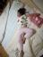
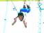
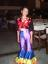
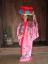
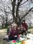

2008年6月15日 0時57分撮影
熟睡中なんだけど、バレエのパッセポーズ：エイッ！。2008年6月1日 13時25分撮影
久しぶりの天王寺動物園。お弁当は天王寺公園で食べました。
2008年5月6日 10時13分撮影
空中ブランコ：4日・5日とチャレンジするも失敗（足がバーにかからない）。。。
しかし、、、最終日の6日、やっとできました！拍手〜！！！
2008年5月4日 21時28分撮影
夜のショータイムは「キッズショー」。ユッコらキッズクラブ女子は、
ブラジルのサンバを披露。翌日の表彰式で、ユッコは見事ダンス優秀賞で
メダルをもらいました。なにより嬉しいね、、、ダンスでもらえて・・・・。
2008年5月3日 14時09分撮影
八重山民俗園の体験工房で民俗衣装を身にまとったユッコです。
うん、、、なかなか似合っていましたよ！2008年5月3日 10時47分撮影
昨夜那覇に入り、今朝早いフライトで石垣島にってきました。
ここは石垣島の最北端「平久保崎灯台」です。レンタカーでドライブ。。。
2008年4月5日 12時09分撮影
みんなでお花見。今日がこの春一番の見ごろって感じでーす。
やっぱり、春は桜ですねぇ。。。2008年3月23日 15時13分撮影
従兄弟の享平ちゃんがユッコの乗馬に付いて来てくれました。
馬も目を細めて笑っている様に見えるなぁ・・・。2008年3月22日 12時01分撮影
とっても良いお天気だったので、お弁当を持って図書館へサイクリング。
３人で３合のご飯を食べ切ってしまう我が家は、みんなが成長真っ只中です。2008年3月8日 17時19分撮影
我が家のお雛様と。毎年大きくなってくる由起子。
今年のお雛様は、腰痛のママにかわってユッコが飾ってくれました。